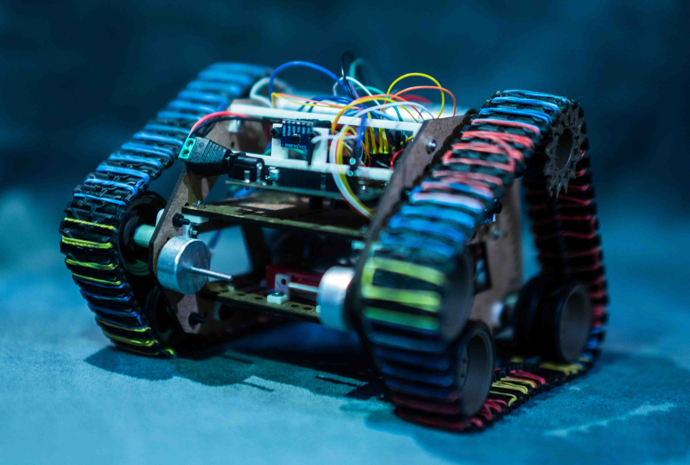

All-Terrian Autonomous Transport Robot

Project information
- Type: Mechanical | Hardware | Software
- Skills: C++ | Electrical | CAD
- Role: Team Member
- Background: https://github.com/UrbanPistek/ATAT-All-Terrain-Autonomous-Transport
Built a small robot from custom designed laser cut side panels and a combination of various sensors for perception such as Time of Flight (TOF) sesnors, an Inertial Measurement Unit (IMU) using a Arduino with a ESP8266 as the primary MCU. The system was powered using a Lipo battery with a buck converter and was mobile through the use of 2 brushless DC motors. Using this combination of sensors and compute the robot performed a simple task of autonomously navigating through a obstacle course.